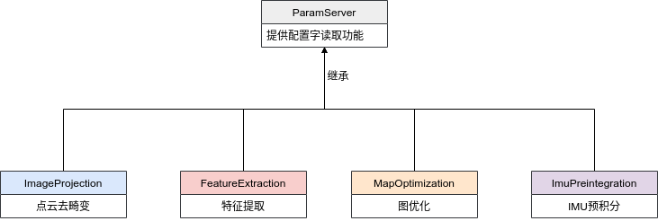

Simple-LIO-SAM——utility文件解读
这是LIOSAM里一个最基础的文件，主要有几个重要功能： 1. 作为所有其他节点的基类，放置所有从配置文件读取的配置字 2. 提供一些实用函数 3. 配置QoS
配置基类
LIOSAM为了方便配置，把所有节点的配置项都写在同一个文件Simple-LIO-SAM/config/params.yaml，同时构建了一个基类ParamServer统一读取该配置文件，其余模块都从该基类继承。  这可能不是最优的方式，不过从实现上来说的确是最简单的。
每个模块的具体配置项后面具体讲解到会逐一解释，目前只需要知道是在哪里配置就行。
实用函数
这里主要讲解其中一个imuConverter函数。该函数的功能主要是将IMU的原始数据旋转到Lidar坐标系。这里要先知道，在LIOSAM中， 默认将雷达坐标系和小车的坐标系等同为同一个坐标系，同时，这里只做了旋转操作，没有做平移操作。代码中有很多处位置都用到这个函数，因此需要理解这个函数到底做了什么。 简单来说这个函数就是做了一个向量坐标变换。旋转矩阵操作空间中一个点有两种意义：1）三维旋转；2）坐标变换。这两种不同的操作在做连续的操作时，对应旋转矩阵的左乘和右乘。 由于笔者以前的研究方向是六自由度姿态估计，用三维旋转操作比较多，一开始被这里的矩阵右乘搞蒙了。关于旋转矩阵的左乘和右乘，可以看这篇博客 1
2
3
4
5
6
7
8
9
10
11
12
13
14
15
16
17
18
19
20
21
22
23
24
25
26
27
28
29
30
31
32
33
34
35
36
37
38
39
40
41
42
43
44
45
46
47
48
49
50
51
52/*
将原始IMU数据：三轴加速度、三轴角速度、三轴角度，与雷达坐标系进行旋转对齐
+ 对齐之后输出的加速度、角速度、角度的x，y，z就变成雷达坐标系的x，y，z
+ 这里的特殊之处在于允许IMU的加速度、角速度与角度的输出是两个不同的坐标系。但在算法中，角度的输出除了用来做第一帧的初始化和加权融合，似乎没有其他作用
+ 这里是将IMU的三个轴与雷达的三个轴在旋转上做对齐，不能加上平移
+ 对向量做坐标系变换，对多个变换的复合应该是右乘
*/
sensor_msgs::msg::Imu imuConverter(const sensor_msgs::msg::Imu& imu_in)
{
sensor_msgs::msg::Imu imu_out = imu_in;
/*
对加速度向量做坐标系变换，注意这里要理解成坐标系变换，也就是同一个加速度在IMU坐标系和Lidar坐标系的不同表达。不能想象成对加速度做旋转
*/
Eigen::Vector3d acc(imu_in.linear_acceleration.x, imu_in.linear_acceleration.y, imu_in.linear_acceleration.z);
acc = extRot * acc;
imu_out.linear_acceleration.x = acc.x();
imu_out.linear_acceleration.y = acc.y();
imu_out.linear_acceleration.z = acc.z();
/*
对角速度做坐标系变换。将IMU坐标系下的向量变换到雷达坐标系。
*/
Eigen::Vector3d gyr(imu_in.angular_velocity.x, imu_in.angular_velocity.y, imu_in.angular_velocity.z);
gyr = extRot * gyr;
imu_out.angular_velocity.x = gyr.x();
imu_out.angular_velocity.y = gyr.y();
imu_out.angular_velocity.z = gyr.z();
/*
对角度做坐标系变换。
+ q_from是IMU在全局坐标系下的位姿，q_from: transformation_from_map_to_imu
+ extQRPY如果与extRot对应的话应该是lidar到imu的变换：transformation_from_lidar_to_imu
+ q_final是将雷达点云从雷达坐标系转换到map坐标系的变换，也是：transformation_from_map_to_lidar -> pcd_in_map = q_final * pcd_in_lidar
+ 这里原代码是q_final = q_from * extQRPY；似乎有点问题，还是按照我的推导修改成q_final = q_from * extQRPT.inverse()；由于这里的extQRPY是
+ 直接从配置文件里面读取的，所以这里加不加逆只需要在配置文件里改就行。认为这里有问题的假设是认为extQRPY和extRot的坐标系关系的定义是一致的，也就是
+ 将imu坐标系下的向量转换到雷达坐标系下。如果作者对这两者的定义刚好是相反的，那这里就没有问题。
*/
Eigen::Quaterniond q_from(imu_in.orientation.w, imu_in.orientation.x, imu_in.orientation.y, imu_in.orientation.z);
Eigen::Quaterniond q_final = q_from * extQRPY.inverse();
imu_out.orientation.x = q_final.x();
imu_out.orientation.y = q_final.y();
imu_out.orientation.z = q_final.z();
imu_out.orientation.w = q_final.w();
if (sqrt(q_final.x()*q_final.x() + q_final.y()*q_final.y() + q_final.z()*q_final.z() + q_final.w()*q_final.w()) < 0.1)
{
RCLCPP_ERROR(get_logger(), "Invalid quaternion, please use a 9-axis IMU!");
rclcpp::shutdown();
}
return imu_out;
}
QoS:Quality of Service
关于ROS2中QoS的基本介绍，参考官方文档学习。QoS的设置中，有两个参数是最重要的。一个是depth，一个是RELIABILITY。depth可以简要理解成中间件DDS为这个消息预留的缓存队列长度。 RELIABILITY主要有两种选项best_effort和reliable，它们的关系类似TCP,UDP。best_effort不能保证每一个消息到到达接收端，但可以保持最好的实时信。reliable保证每一帧消息 都到达接收端，但是无法保证实时性。ROS2中专门为传感器预设了一个SensorDataQoS，里面采用的就是best_effort 的设置。
在LIOSAM设置了三种QoS，分别为：原始IMU数据、原始雷达数据、框架内部传输
原始IMU数据QoS
1
2
3
4
5
6
7
8
9
10
11
12
13
14
15
16
17
18/// @brief 原始IMU数据的QOS，因为IMU数据较小，所以depth可以设成较大
rmw_qos_profile_t qos_profile_imu{
RMW_QOS_POLICY_HISTORY_KEEP_LAST,
2000,
RMW_QOS_POLICY_RELIABILITY_BEST_EFFORT,
RMW_QOS_POLICY_DURABILITY_VOLATILE,
RMW_QOS_DEADLINE_DEFAULT,
RMW_QOS_LIFESPAN_DEFAULT,
RMW_QOS_POLICY_LIVELINESS_SYSTEM_DEFAULT,
RMW_QOS_LIVELINESS_LEASE_DURATION_DEFAULT,
false
};
auto qos_imu = rclcpp::QoS(
rclcpp::QoSInitialization(
qos_profile_imu.history,
qos_profile_imu.depth
),
qos_profile_imu);原始雷达数据QoS
1
2
3
4
5
6
7
8
9
10
11
12
13
14
15
16
17
18/// @brief 原始雷达数据topic的QOS，主要是best_effort和depth起作用
rmw_qos_profile_t qos_profile_lidar{
RMW_QOS_POLICY_HISTORY_KEEP_LAST,
5,
RMW_QOS_POLICY_RELIABILITY_BEST_EFFORT,
RMW_QOS_POLICY_DURABILITY_VOLATILE,
RMW_QOS_DEADLINE_DEFAULT,
RMW_QOS_LIFESPAN_DEFAULT,
RMW_QOS_POLICY_LIVELINESS_SYSTEM_DEFAULT,
RMW_QOS_LIVELINESS_LEASE_DURATION_DEFAULT,
false
};
auto qos_lidar = rclcpp::QoS(
rclcpp::QoSInitialization(
qos_profile_lidar.history,
qos_profile_lidar.depth
),
qos_profile_lidar);算法框架内部传输QoS 算法框架内部要求有最高的实时性，并且由于传输中有很多点云类型的数据（较大），因此作者把
depth设置为11
2
3
4
5
6
7
8
9
10
11
12
13
14
15
16
17
18
19
20/// @brief 算法框架中默认的QOS，主要是depth=1和reliability=best_effort起作用。对于传输实时性有要求，不要求每个数据可接收的消息，一般
/// 设成best_effort。在ROS2中对于传感器数据，有一个内置的QOS叫rclcpp::SensorDataQoS()
rmw_qos_profile_t qos_profile{
RMW_QOS_POLICY_HISTORY_KEEP_LAST,
1,
RMW_QOS_POLICY_RELIABILITY_BEST_EFFORT,
RMW_QOS_POLICY_DURABILITY_VOLATILE,
RMW_QOS_DEADLINE_DEFAULT,
RMW_QOS_LIFESPAN_DEFAULT,
RMW_QOS_POLICY_LIVELINESS_SYSTEM_DEFAULT,
RMW_QOS_LIVELINESS_LEASE_DURATION_DEFAULT,
false
};
auto qos = rclcpp::QoS(
rclcpp::QoSInitialization(
qos_profile.history,
qos_profile.depth
),
qos_profile);